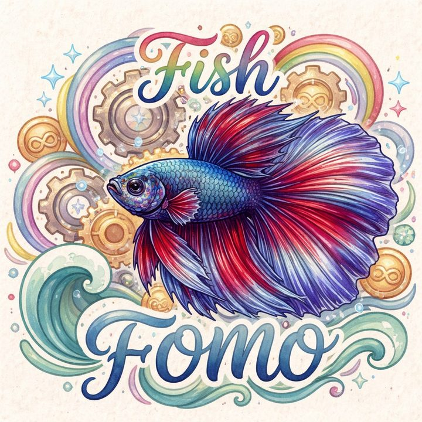

本週教室
下單前，先問自己 5 個問題
你的這筆單，過關了嗎？
模型圖鑑
每支一個模型，點開就能看
K 線都是程式生成的模擬資料，只拿來說明邏輯。
名詞小抄
影片裡的英文縮寫
關於
別讓 FOMO 替你按下單

FOMO 是怕錯過。行情一噴，手就想追。FOMOFISH 想做的，是把每個進場理由拆開來看清楚，讓你照規則下單，而不是照心情。
每支影片都把一個模型拆成 3 到 5 步，順序幾乎都一樣：
1找區域2等掃流動性3看結構轉換4回到缺口再進場
本週教室
模型圖鑑
K 線都是程式生成的模擬資料，只拿來說明邏輯。
名詞小抄
關於

FOMO 是怕錯過。行情一噴，手就想追。FOMOFISH 想做的，是把每個進場理由拆開來看清楚，讓你照規則下單，而不是照心情。
每支影片都把一個模型拆成 3 到 5 步，順序幾乎都一樣：